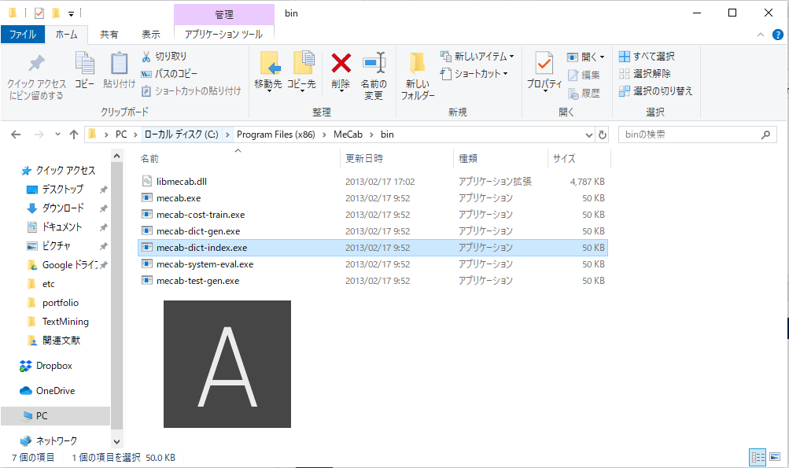

WindowsにNEologd辞書をインストールして、RMeCabを実行する方法
皆さんおはこんばんにちは。 最近在宅勤務で運動不足ですが、平日休日問わず研究活動をしています。 学術誌投稿を目指したBlog記事には書けない内容なので、更新はストップしてしまっていますがちゃんと活動はしています。
今回はその研究の中で利用しているMeCabにまつわるTipsのご紹介です。MeCabというと形態素解析ソフトということはこのブログを読まれている方はお分かりかと思いますが、その辞書にNEologd辞書を使用できるようにしてみたというのが内容です。MeCabってなに？という方もいらっしゃるかもしれませんので、かなり簡単にご紹介します。
1. Mecab(RMeCab)とは？
MeCabは日本語テキストマイニングで使用される形態素解析ソフトです。英語などの言語とは異なり、日本語は単語毎にスペースを置かないため、テキストマイニングを行う際、そのままでは文章を単語単位に区切って集計するといったことができません。例えば、「これはペンです。」という文章はそのままでは「これはペンです。」という1つの単語として認識されてしまいます。ですが、単語の頻度分析を行う際などは、「これ/は/ペン/です/。」という風に文章を単語レベルにまで分割し、「ペン」という特徴量を取得したいわけです。それができるのがRMeCabで、この処理は形態素解析と呼ばれます。1そして、RMeCabとはこのMeCabのラッパーになります。RからMeCabを使用するにはRMeCabを使用する必要があります。使用方法は簡単で、RMeCabC関数に文章を渡すだけです。
library(magrittr)
library(RMeCab)
RMeCabC("これはペンです。") %>% unlist()## 名詞 助詞 名詞 助動詞 記号
## "これ" "は" "ペン" "です" "。"RMeCabC関数は結果をリストで返してくるので、unlistでcharacterに変換しています。
固有名詞に弱いデフォルトのMeCab
便利なように思えるのですが、デフォルトのMeCabは固有名詞に弱いという弱点があります。例えば、「欅坂46が赤いきつねを食べている。」という文章を形態素解析してみましょう。
RMeCabC("欅坂46が赤いきつねを食べている。") %>% unlist()## 名詞 名詞 名詞 助詞 形容詞 名詞 助詞 動詞
## "欅" "坂" "46" "が" "赤い" "きつね" "を" "食べ"
## 助詞 動詞 記号
## "て" "いる" "。"予想していた結果は「欅坂46/が/赤いきつね/を/食べ/て/いる/。」でしょう。ただ、固有名詞を上手く形態素解析することができていないため、不必要なところで分割がなされており、「赤い/きつね/を/食べ」という部分については「赤い（動物の）きつね」を食べているかのような解析結果になっています。赤いきつねの「きつね」と動物の「きつね」を同等に扱ってしまうので、問題があります。また、経済においても以下のように日経平均株価が分割され、新聞社の「日経」と株価の「日経」が、大統領の「トランプ」とカードの「トランプ」が区別できないといったことが想定されます。
RMeCabC("今週の日経平均株価は、上値抵抗線を突破して上昇！") %>% unlist()## 名詞 助詞 名詞 名詞 名詞 助詞 記号 名詞 名詞 名詞 助詞
## "今週" "の" "日経" "平均" "株価" "は" "、" "上値" "抵抗" "線" "を"
## 名詞 動詞 助詞 名詞 記号
## "突破" "し" "て" "上昇" "！"RMeCabC("トランプ政権による経済活動再開の指針発表が評価される") %>% unlist()## 名詞 名詞 助詞 名詞 名詞 名詞 助詞
## "トランプ" "政権" "による" "経済" "活動" "再開" "の"
## 名詞 名詞 助詞 名詞 動詞 動詞
## "指針" "発表" "が" "評価" "さ" "れる"これはデフォルトでMeCabが使用している辞書に原因があります。IPA辞書(ipadic)と呼ばれる物で、奈良先端科学技術大学院大学が公開している茶筌と呼ばれる形態素解析ソフト用に作られました。こちらを見ると辞書の更新は2007年でストップしており、新語や流行語がアップデートされていないために上記の固有名詞が上手く形態素解析できないことがわかります。
新語に強いNEologd辞書
最近MeCabでよく使用されている辞書にNEologd辞書というものがあります。NEologd辞書とは、Web上から得た新語に対応しており、頻繁に更新されるMeCab用のシステム辞書です。2Twitterのアカウントには、
特色は語彙の多さと更新頻度、新語の採録の速さ、読み仮名の正確さ、表記揺れへの対応。おもな解析対象はWeb上のニュース記事や流行した出来事。 おもな用途は文書分類、文書ベクトル作成、単語埋め込みベクトル作成、読み仮名付与。
と記載されており、上述したIPA辞書の弱点を補完する辞書となっています。今回の記事はその辞書のインストール方法についてですが、インストールした辞書の威力を先にお見せしておきます。実行するには、RMeCab関数に辞書ファイル(.dicファイル)のパスを渡してやれば良いです。
dic_directory <- "C:\\hogehoge\\mecab-user-dict-seed.yyyymmdd.dic"RMeCabC("欅坂46が赤いきつねを食べている。",dic=dic_directory) %>% unlist()## 名詞 助詞 名詞 助詞 動詞 助詞
## "欅坂46" "が" "赤いきつね" "を" "食べ" "て"
## 動詞 記号
## "いる" "。"RMeCabC("今週の日経平均株価は、上値抵抗線を突破して上昇！",dic=dic_directory) %>% unlist()## 名詞 助詞 名詞 助詞 記号
## "今週" "の" "日経平均株価" "は" "、"
## 名詞 名詞 名詞 助詞 名詞
## "上値" "抵抗" "線" "を" "突破"
## 動詞 助詞 名詞 記号
## "し" "て" "上昇" "！"RMeCabC("トランプ政権による経済活動再開の指針発表が評価される",dic=dic_directory) %>% unlist()## 名詞 助詞 名詞 名詞 助詞
## "トランプ政権" "による" "経済活動" "再開" "の"
## 名詞 名詞 助詞 名詞 動詞
## "指針" "発表" "が" "評価" "さ"
## 動詞
## "れる"上値抵抗線は1語カウントしてほしいところではありますが、それ以外は上手く形態素解析できていそうです。
このNEologd辞書ですが、Windowsのインストールが想定されていません。つまり、Windowsユーザーは直接インストールすることができないのです。Windowsユーザーは少々ややこしい手順を踏まなければなりません。今回はそのややこしい手順を解説する記事です。Linuxでインストールを行い、それをWindows環境にコピー、その後辞書ファイルを作成します。
2. インストール手順
A. Windows Subsystem for Linux(WSL)のインストール
Windows Power Shellを管理者権限で開き、
Enable-WindowsOptionalFeature -Online -FeatureName Microsoft-Windows-Subsystem-Linuxを実行する。WSLをインストールすることができます。

powerShellでの実行の様子
B. Ubuntu Linuxのインストール
Microsoft Storeよりubuntuをダウンロードする。

ubuntuの画面
インストールが完了したらubuntuを起動し、初期設定を完了させる(ID、パスワード)。
C. Ubuntu LinuxにMeCabをインストール
ubuntuのコマンドプロンプトで、
sudo apt-get update
sudo apt install mecab
sudo apt install libmecab-dev
sudo apt install mecab-ipadic-utf8を入力し、MeCabをインストール。
ubuntuでmecabをインストール
D. Ubuntu for LinuxにNEologd辞書をインストール
ubuntsuのコマンドプロンプトで
sudo apt install make
git clone --depth 1 https://github.com/neologd/mecab-ipadic-neologd.git
cd mecab-ipadic-neologd
sudo bin/install-mecab-ipadic-neologd -n -aを実行。NEologd辞書ファイルが(/usr/lib/x86_64-linux-gnu/mecab/dic/mecab-ipadic-neologd/)にインストールできます。
E. Ubuntu for LinuxからWindowsへ辞書ファイルをコピー
ubuntuのコマンドプロンプトで
explorer.exe .を入力。エクスプローラーが立ち上がるので、/usr/lib/x86_64-linux-gnu/mecab/dic/mecab-ipadic-neologd/(ディレクトリ)をWindowsの任意のディレクトリにコピーする。完了したらUbuntuは閉じる。
エクスプローラーでubuntu内部ディレクトリを確認する図
F. Windows内で辞書ファイルのコンパイル(SHIFT-JIS)を行う。
コピーしたディレクトリ内の以下のcsvを辞書ファイル(.dic)にコンパイルします。(yyyymmddは辞書の最終更新日なので変更してください)
-mecab-ipadic-neologd-buildmecab-ipadic-2.7.0-20070801-neologd-yyyymmdd-mecab-user-dict-seed.yyyymmdd.csvその際、元ファイルはエンコーディングがUTF-8となっているので、SHIFT-JISへ変換することに注意です。これをしないと、RMeCabを実行したときに結果が文字化けします。コンパイルにはMeCabのmecab-dict-indexというバイナリファイルを使用します。自分は以下のディレクトリに存在しました。
C: -Program Files (x86) -MeCab -bin -mecab-dict-index.exe

コマンドプロンプトを立ち上げ、
C:\Program Files (x86)\MeCab\bin\mecab-dict-index.exe -d .../mecab-ipadic-neologd/buildmecab/ipadic-2.7.0-20070801-neologd-yyyymmdd(ファイルの保存場所) -u NEologd.yyyymmdd.dic -f utf-8 -t shift-jis mecab-ipadic-neologd\buildmecab\ipadic-2.7.0-20070801-neologd-yyyymmdd\mecab-user-dict-seed.yyyymmdd.csv を適宜変更の上、入力。.../mecab-ipadic-neologd/buildmecab/ipadic-2.7.0-20070801-neologd-yyyymmddに辞書がコンパイルされ、NEologd.yyyymmdd.dicができます。
3. まとめ
以上で、NEologd辞書が使用できるようになります。非常に強力なツールなので使用してみてください。なお、辞書がアップデートされた際は同じ手続きを行う必要があります。
<後日談> Ubuntu for Linuxを使用しなくてもダウンロードできそうな方法ありました。
https://qiita.com/zincjp/items/c61c441426b9482b5a48
ただ、自分は実行していないので実際にできるかはわかりません。辞書が更新されたら、やってみたいと思います。